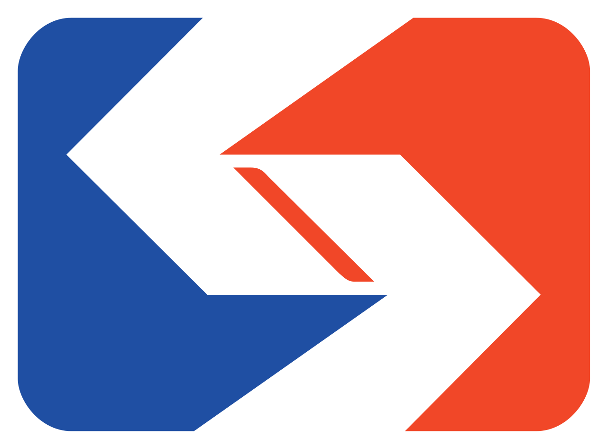

Work Experience

Southeastern Pennsylvania Transportation Authority (SEPTA)
Intern - Department of Information Technology
- Serviced over 600 on-site employees daily, resolved hardware and software issues, deployed and repaired devices, and helped to maintain network integrity throughout company headquarters.
- Deployed to various off-site locations to present and promote company initiatives and assist employees with issues regarding their company accounts or deployed devices.
- Assisted in creating a wired network connection for the Customer Service Department, enabling Department employees to utilize a cloud communication software, Avaya, at all work stations.
- Assisted with multiple projects for the Cybersecurity team, including the deployment of USB scanning stations and the creation of a Powershell script that ran periodic malware scans on specific company devices.

iD Tech Camps
Programming Instructor
- Served as primary instructor for students aged 13 - 17 beginning with the basics of the Python language, and finishing with an introduction to Tensorflow, Image Classification and Machine Learning.
- Led projects with advanced students outside of the routine curriculum, i.e. custom Image Classification Models and a basic feedforward network from scratch.
- Additional time spent teaching game design with both Python and JavaScript, and introduced students to Object Oriented Programming.
- Gained command of common data science modules in Python, specifically NumPy.